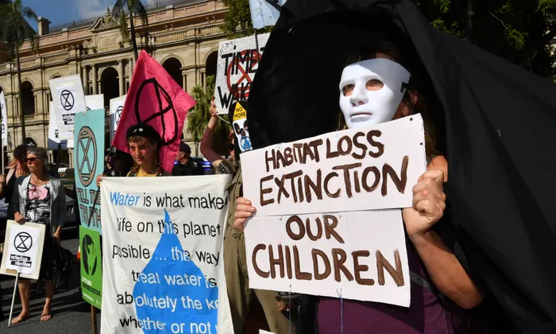
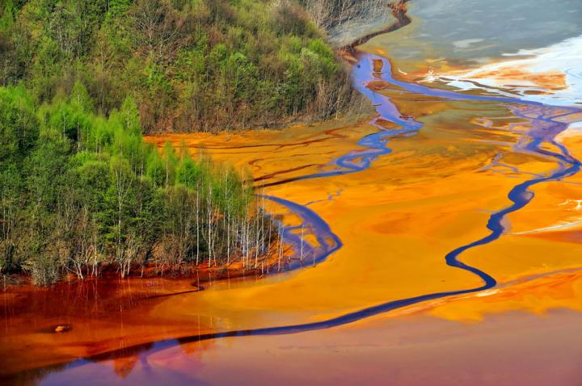
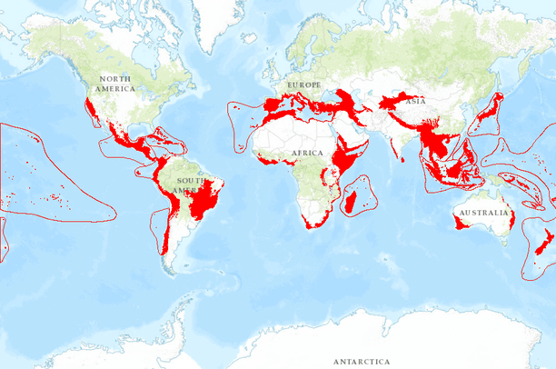
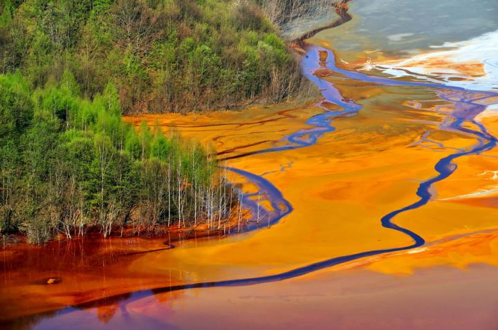
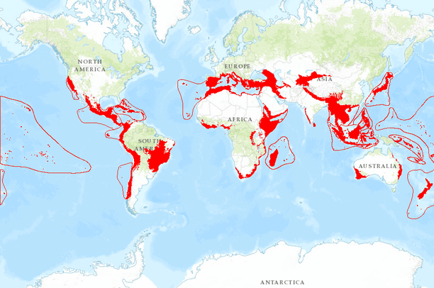
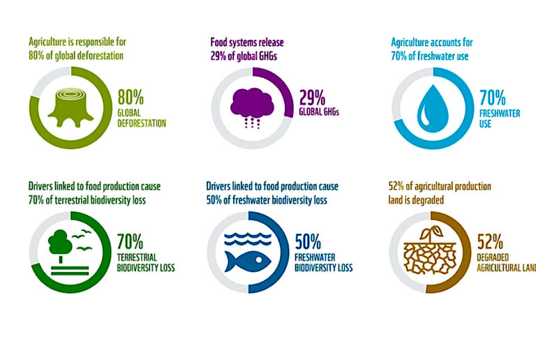

This is especially true for endemic species, or species which only exist in one area. If this one area is harmed, it is extremely easy for them to go extinct.
 



These hotspots once covered 12% of the Earth, and now only cover 1.4%. None of the hotspots still have more than a third of their original area in pristine condition. This site includes case studies on several hotspots.
Chart showing a dramatic decline in global habitats since 1700
